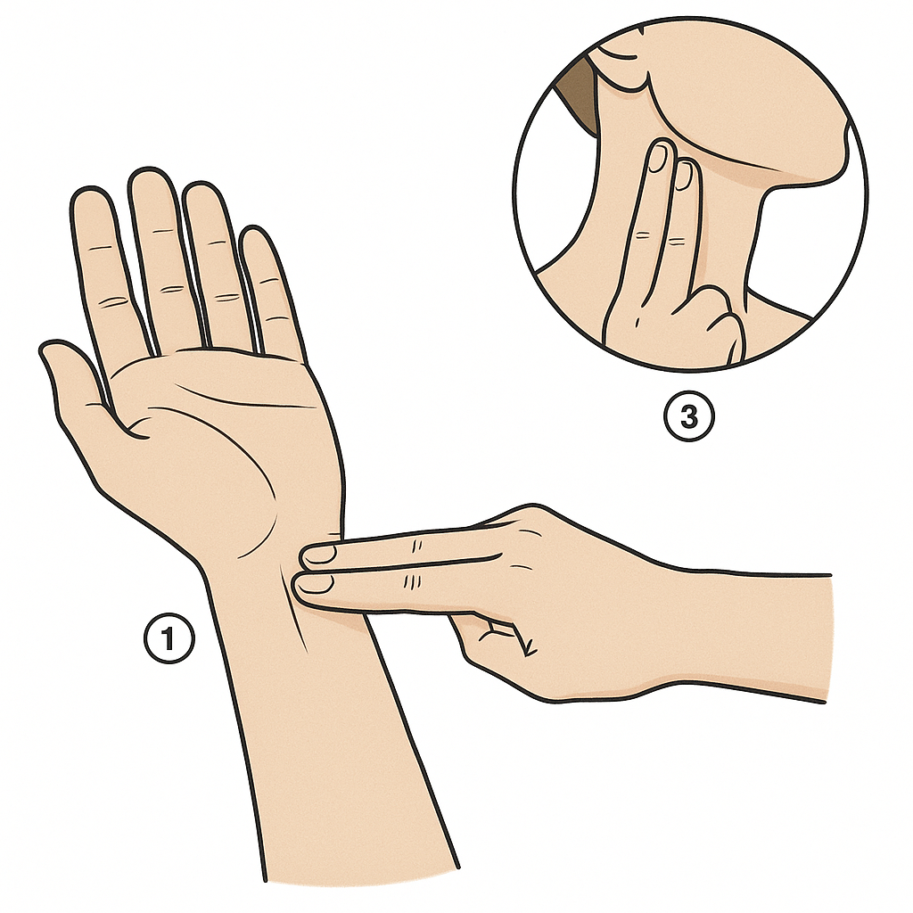
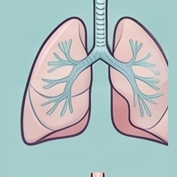
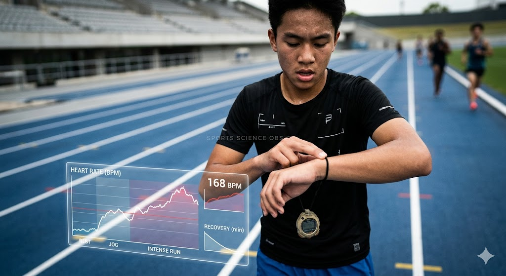
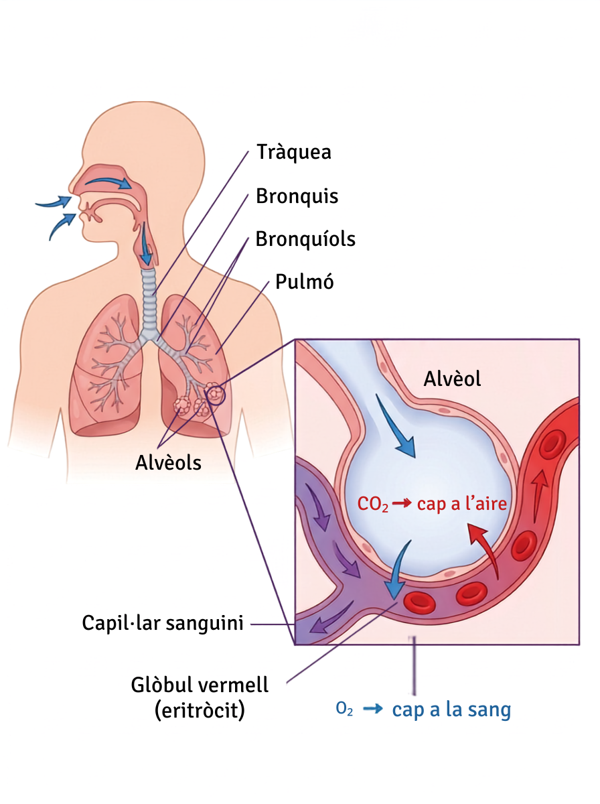

Altres paraules: repòs = آرام · esforç = محنت، مشقت · llindar = حد · gràfica = گراف · pic = سب سے اونچا نقطہ · sedentari = کم ورزش کرنے والا · entrenat = تربیت یافتہ
Uneix cada paraula amb el que vol dir. La primera és l'exemple.
Copia cada paraula en català.
Completa amb: enrere · eritròcits · oxigen · pulmons.
L'hemoglobina és dins dels i porta l'.
La sang fa dues voltes: una pels i una per tot el cos.
Les vàlvules no deixen que la sang torni .
Enigma 1 — la Mercè. Té 14 anys i corre una cursa de 10 km. A la meta, el seu cor fa 185 bat/min. El cor baixa una mica de seguida, però triga un quart d'hora a tornar al repòs. Per quina raó puja de pressa i baixa a poc a poc?
Enigma 2 — el Marc. Té 28 anys i corre. Ara s'ofega quan puja les escales. A l'anàlisi de sang té poca hemoglobina: 9,2 (el normal és de 13,5 a 17,5). Per quina raó arriba abans al límit?
Crec que el meu pols en repòs és d'uns bat/min.
Crec que, després de córrer, el cor tornarà al repòs en: 1 minut 5 minuts 15 minuts
- Posa 2 dits (l'índex i el del mig, mai el polze) al canell o al coll. Prem fluix.دو انگلیاں (شہادت کی اور درمیانی، انگوٹھا کبھی نہیں) کلائی یا گردن پر رکھیں۔ ہلکا دبائیں۔
- Compta els batecs durant 15 segons.۱۵ سیکنڈ تک دھڑکنیں گنیں۔
- Multiplica × 4: així tens els batecs d'1 minut.۴ سے ضرب دیں: اس طرح آپ کو ایک منٹ کی دھڑکنیں مل جاتی ہیں۔
- El company/a mira el rellotge i et diu «ja!» i «para!». Després canvieu.ساتھی گھڑی دیکھتا ہے اور «شروع!» اور «رکو!» کہتا ہے۔ پھر باری بدلیں۔
⚠️ Seguretat: si et mareges o et fa mal el pit, para i avisa el professor.
A cada moment, compta els batecs en 15 segons i escriu-los. Després multiplica × 4. Exemple: 18 batecs en 15 s → 18 × 4 = 72 bat/min.
| Momentوقت | Batecs en 15 s۱۵ سیکنڈ میں دھڑکنیں | × 4 = FC (bat/min)× ۴ = فی منٹ |
|---|---|---|
| Exempleمثال | 18 | 18 × 4 = 72 |
| Repòs: assegut/da, tranquil/aآرام: بیٹھے ہوئے، پرسکون | ||
| 🏃 EXERCICI: 2 minuts saltant (o movent els braços ràpid, assegut/da)ورزش: دو منٹ چھلانگیں (یا بیٹھ کر بازو تیزی سے ہلائیں) | ||
| Just en pararرکتے ہی فوراً | ||
| Recuperació: 1 minut desprésrecuperació: ایک منٹ بعد | ||
| Recuperació: 2 minuts després | ||
| Recuperació: 3 minuts després | ||
| Recuperació: 4 minuts després | ||
| Recuperació: 5 minuts després | ||

Quan corres, els músculs treballen i gasten molta energia. Per fer energia necessiten oxigen. L'oxigen viatja per la sang. Per això el cor ha de bombar més sang: batega més ràpid i més fort.
Tu no hi penses: passa sol. El cervell nota l'esforç i envia un avís pels nervis i amb una hormona, l'adrenalina. L'avís diu al cor: «batega més ràpid».
Fes servir aquestes paraules: oxigen · energia · sang.
| Edatعمر | FC màxزیادہ سے زیادہ | Llindarحد |
|---|---|---|
| 12 anys | 208 | 177 |
| 13 anys | 207 | 176 |
| 14 anys | 206 | 175 |
| 15 anys | 205 | 174 |
| 16 anys | 204 | 173 |
Tinc anys. FC màxima = 220 − = .
El meu llindar (taula) és bat/min.
Just en parar, la meva FC era bat/min.
He estat a la zona: Aeròbica Anaeròbica
Ho sé perquè la meva FC és que el meu llindar. (més gran / més petita)
Zona aeròbica (verd): vas a ritme mitjà. Arriba prou oxigen. Pots aguantar molta estona.
Zona anaeròbica (vermell): vas al màxim. Falta oxigen. Es fa àcid làctic i el múscul «crema». Només aguantes uns minuts.

L'aire entra per la tràquea i baixa pels bronquis fins als alvèols: saquets molt petits dins del pulmó. Cada alvèol està tocant un capil·lar. Allà l'O₂ passa a la sang i el CO₂ surt cap a l'aire. La sang arriba lila (sense O₂) i en surt vermella (amb O₂).
Ho he triat perquè allà l'aire està tocant un ple de .
Cada columna és un moment de la teva taula. Busca la columna, puja fins al teu número de FC i fes-hi un punt. Al final, uneix els punts amb una línia.
Sí No
El punt més alt de la meva gràfica és bat/min i el meu llindar és bat/min. Per tant, el punt queda de la ratlla vermella. (per sobre / per sota)
A baix (eix horitzontal) hi ha el temps, en minuts. A l'esquerra (eix vertical) hi ha la FC, en bat/min. La línia vermella és el cor de la Mercè durant la cursa. El punt vermell és el pic: la FC més alta, a la meta.
Exemple (en verd a la gràfica): busca el 40 a baix, puja fins a la línia i mira a l'esquerra → al minut 40 la FC és d'uns 165 bat/min. Ara fes el mateix amb el punt vermell.
Al minut .
bat/min.
Al final de la cursa, la Mercè va a la zona anaeròbica: falta oxigen i als músculs s'acumula àcid làctic. Quan para, el cos encara «deu» oxigen: ha de netejar l'àcid làctic i el CO₂. Per això el cor no baixa de cop: baixa a poc a poc.
Paraules: de pressa · a poc a poc · àcid làctic · oxigen
Quan comença la cursa, la FC puja . Després de la meta, baixa .
Per quina raó el cor no torna al repòs de cop, si la Mercè ja ha parat?
Els músculs encara han de netejar l' i el cos encara deu .
Per tant, la recuperació és lenta perquè .
En lloc de 10 km, la Mercè corre 30 segons al màxim i para. El seu cor tornarà al repòs…
Ho he triat perquè en 30 segons als músculs s'acumula àcid làctic. (poc / molt)
Dues persones de 20 anys fan el mateix exercici durant 5 minuts. Una és esportista (línia verda). L'altra és sedentària: no fa esport (línia lila, de ratlletes). El cor de l'esportista és més fort: amb cada batec envia molta sang. Per això batega més lent en repòs i es recupera abans.
L'esportista es recupera més ràpid perquè el seu cor, amb cada batec, envia sang. (molta / poca)
Ho veig a la gràfica: la línia verda torna a baix al minut , i la lila al minut 20 encara .
Quan fem exercici, els músculs necessiten més oxigen. El cor batega més ràpid i respirem més fort per portar-lo. Si anem al màxim (zona anaeròbica), falta oxigen, es fa àcid làctic i la recuperació és lenta. Un cor entrenat es recupera abans.
Cada matí, just en llevar-te (abans d'esmorzar), compta el pols durant 30 segons i multiplica × 2. Apunta-ho a la taula.
| Matíصبح | Dataتاریخ | Batecs en 30 s۳۰ سیکنڈ میں دھڑکنیں | × 2 = FC (bat/min)× ۲ = فی منٹ | He dormit bé?کیا میں اچھا سویا/سوئی؟ |
|---|---|---|---|---|
| 1 | Sí No | |||
| 2 | Sí No | |||
| 3 | Sí No |
Mira les teves dades i escriu una pregunta en català. Exemple: «Per quina raó la meva FC és més alta el dia que he dormit malament?»
Per quina raó la meva FC ?
⚠️ Porta aquesta fitxa a la Sessió 6. یہ ورق سبق ۶ میں ساتھ لائیں۔
📚 Tasca per a casa · cada dia 10 minuts: ① llegeix una targeta · ② mira les imatges i les Paraules d'avui · ③ explica-la en veu alta en català · ④ marca ✔.
L'hemoglobina de la sang porta l'O₂. Els nervis i l'adrenalina acceleren el cor sense que hi pensis.
FC màxima = 220 − edat. Amb 14 anys: 206; llindar (85%): 175. Aeròbica: prou O₂, s'aguanta molta estona. Anaeròbica: falta O₂, es fa àcid làctic, només uns minuts.
La FC puja de pressa (nervis i adrenalina). Pic: 185 a la meta (minut 55). Després baixa a poc a poc: el cos neteja l'àcid làctic (deute d'oxigen).

L'hemoglobina dels glòbuls vermells porta l'O₂. El Marc en té poca (9,2): la sang porta menys O₂. El cor batega més de pressa i el Marc arriba abans a la zona anaeròbica.
Tràquea → bronquis → alvèols. La paret de l'alvèol és molt prima: l'O₂ passa a la sang i el CO₂ surt. Amb l'esforç respirem i bateguem més ràpid.
El cor d'un esportista és més fort: cada batec envia més sang. En repòs batega més lent (≈45) i es recupera abans que el d'un sedentari.